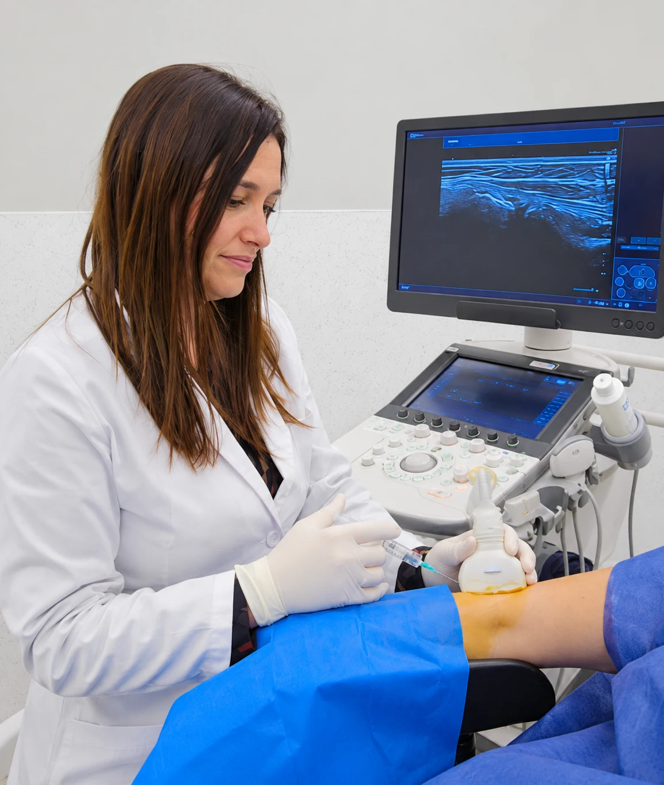
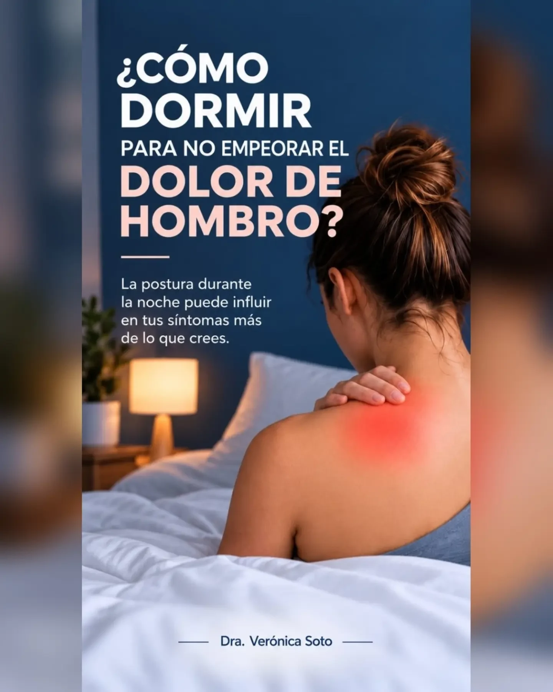
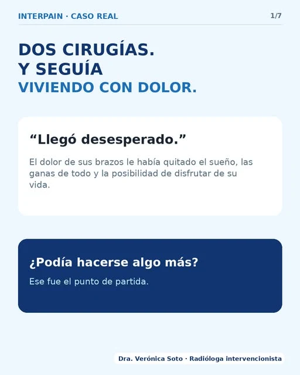
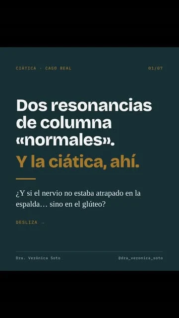
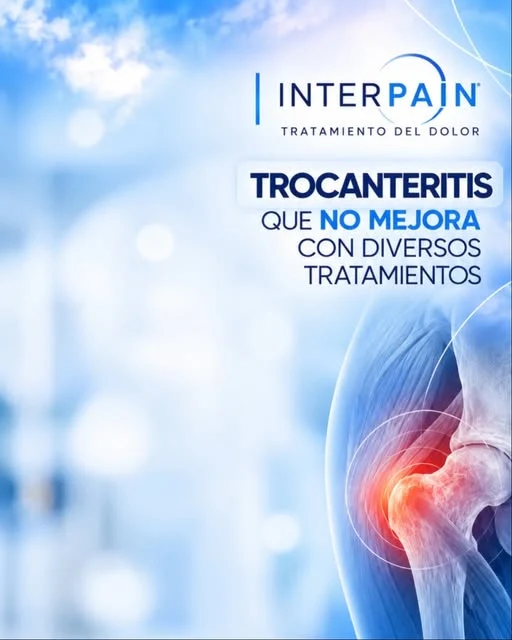
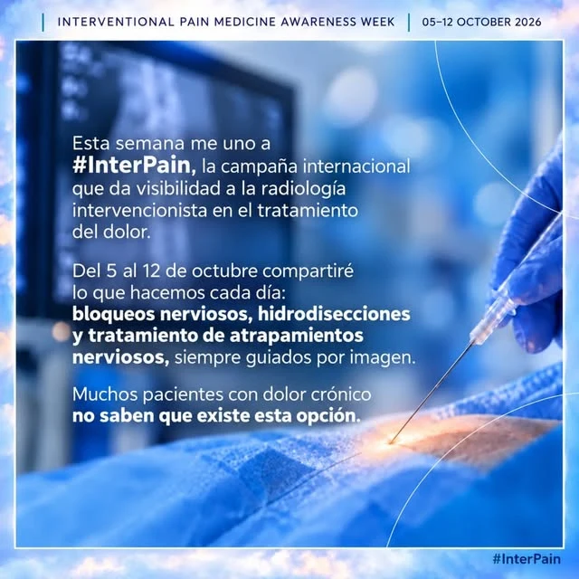

LA ECOGRAFÍA NOS AYUDA A MIRAR DENTRO
Primero,
comprender.
Acercarnos a la zona que duele permite relacionar tus síntomas con las estructuras que se estudian.
Desplázate para explorar ↓
DRA. VERÓNICA SOTO VERDUGO
Radióloga intervencionista. Tratamiento del dolor guiado por ecografía
Encuentro con ecografía el origen de tu dolor y lo trato con precisión, empezando siempre por lo menos invasivo.
Explorar los artículos ↗Preparando la exploración 3D…
El desplazamiento guía la escena · Representación conceptual
LA ECOGRAFÍA NOS AYUDA A MIRAR DENTRO
Acercarnos a la zona que duele permite relacionar tus síntomas con las estructuras que se estudian.
Desplázate para explorar ↓IMAGEN EN TIEMPO REAL
El transductor obtiene imágenes de los tejidos. Esa información ayuda a valorar el problema y, cuando corresponde, a planificar un procedimiento.

INTERVENCIÓN ECOGUIADA
Cuando una punción está indicada, la ecografía ayuda al especialista a visualizar y orientar la aguja. La decisión depende de cada caso.
Representación conceptual para comprender la técnica; no reproduce una trayectoria clínica ni un tratamiento concreto.
Explorar los temas ↓
POR QUÉ ESTE BLOG
En mi trabajo diario veo a muchas personas con dolor que llegan con las mismas dudas: qué les pasa, por qué no mejoran y qué opciones tienen. Este blog nace para explicar esos problemas de forma cercana y clara, y para responder a las preguntas que me hacen una y otra vez.
03 / UNA MIRADA MÁS PRECISA
Muchas de las personas que llegan a mí ya han probado varios tratamientos sin mejorar. Mi trabajo empieza por buscar de dónde viene de verdad el dolor, explorando y haciendo la ecografía justo donde duele, y por tratar ese punto viendo la aguja en la pantalla.
No me gusta que un paciente se quede sin salida. Siempre hay un siguiente paso, y si lo que necesitas no lo hago yo, te oriento hacia quien lo hace.
Empiezo por lo más sencillo y solo escalo si hace falta. Lo mínimamente invasivo no cierra la puerta a una cirugía si algún día es necesaria.
Vivimos más años y nuestras articulaciones y tendones tienen que aguantarlos. Cada prótesis que se retrasa es una prótesis menos que recambiar.
El dolor que se hace crónico no viene solo: arrastra el sueño, el ánimo, el trabajo y la vida personal. Tratarlo pronto y de forma completa es la mejor manera de evitarlo.
Lo que busco es que llegues a la vejez moviéndote, con autonomía y en la mejor condición posible.

LA DOCTORA
Radióloga intervencionista. Tratamiento del dolor guiado por ecografía
Mi objetivo es que conserves tus propias articulaciones y llegues a la vejez en la mejor condición posible.
Más de 13 años en procedimientos mínimamente invasivos · N.º de colegiada 333311003
Trayectoria, formación y técnicas ↗PARA ENTENDERLO MEJOR
Es un procedimiento en el que se utiliza ecografía para visualizar las estructuras y orientar la intervención. Su indicación se decide tras una valoración médica.
Explorar los artículos ↗Sin tratamiento puede durar de meses a más de un año. Con un buen programa de ejercicio, muchas personas mejoran en unas semanas o pocos meses.
Leer el artículo sobre epicondilitis ↗Sí. La ecografía de alta resolución permite ver incluso nervios muy pequeños y seguirlos a lo largo de su recorrido.
Leer el artículo sobre nervios atrapados ↗EN INSTAGRAM · @DRA_VERONICA_SOTO
Divulgación de la doctora sobre dolor, movimiento y valoración individual.
Ver todas las publicaciones ↗
Dolor de hombro y descanso ↗Ver publicación en Instagram
Dolor después de una cirugía ↗Caso individual · Ver en Instagram
Dolor ciático y valoración ↗Ver publicación original en InstagramFormación en medicina deportiva ↗Ver publicación original en Instagram
Dolor lateral de cadera ↗Ver publicación original en Instagram
Abordaje del dolor persistente ↗Ver publicación original en Instagram